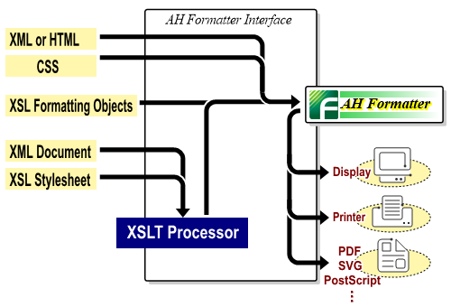

Ordinarily, text is arranged from the top of the page, and when the text fills up the entire page, a page break occurs automatically. It is possible to place the blocks (including paragraph and figures) on one page by specifying ‘keep-together’.
Antenna House Formatter formats XSL Formatting Objects (XSL-FO), XML with XSL stylesheet, or HTML with CSS. The formatted result will be displayed in GUI and outputted or printed to PDF. (Display and printing are available only with the Windows version).
The work flow is as shown below. Antenna House Formatter formats XSL Formatting Objects (XSL-FO), XML with XSL stylesheet, or HTML with CSS. The formatted result will be displayed in GUI and outputted or printed to PDF. (Display and printing are available only with the Windows version).
The work flow is as shown below.Antenna House Formatter formats XSL Formatting Objects (XSL-FO), XML with XSL stylesheet, or HTML with CSS. The formatted result will be displayed in GUI and outputted or printed to PDF. (Display and printing are available only with the Windows version).
The work flow is as shown below.By specifying ‘keep-together’, blocks are placed in the one column.
Antenna House Formatter formats XSL Formatting Objects (XSL-FO), XML with XSL stylesheet, or HTML with CSS. The formatted result will be displayed in GUI and outputted or printed to PDF. (Display and printing are available only with the Windows version).
The work flow is as shown below.